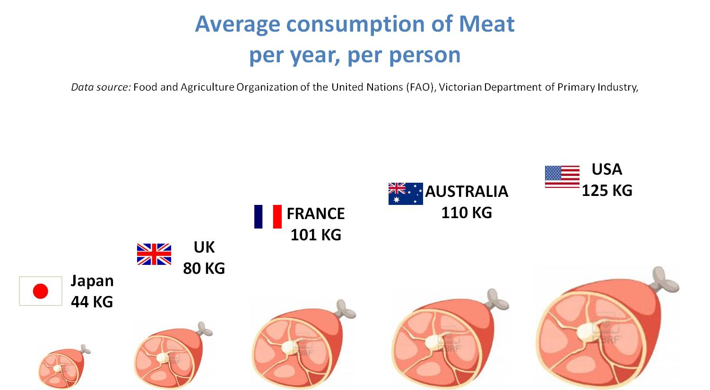

臺灣肉類消耗總量非常大，根據農委會統計的最新糧食供給量，2012年臺灣每人約吃掉75公斤的肉，較日本的平均值為高，而斯德哥爾摩國際水研究所（SIWI）研究人員Malik Falkenmark和其團隊所進行的報告指出，生產一公斤動物性蛋白質食物所消耗的水資源，是植物性的5-10倍，排擠農業用水。以全球的角度來看，畜牧業更和農業競爭有限的土地資源，耕地不足導致農作物供不應求。

Picture from:
GeoCurrents